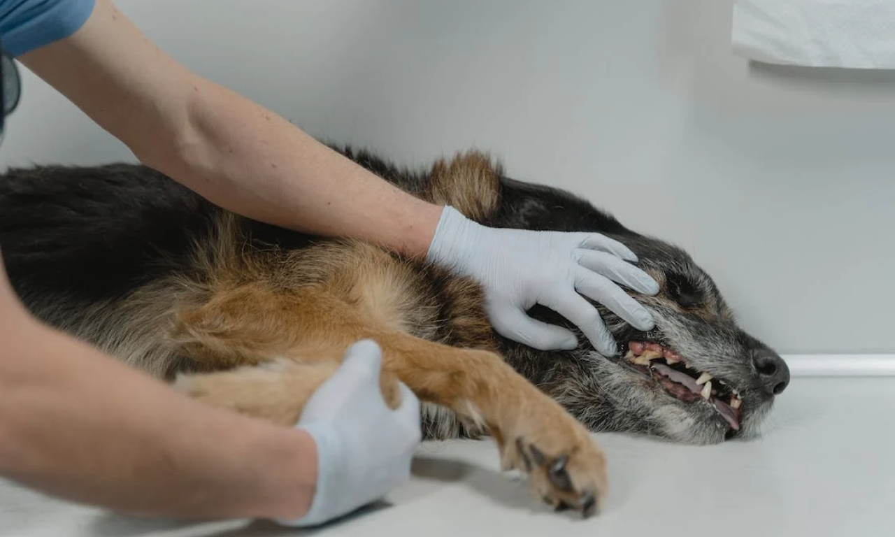
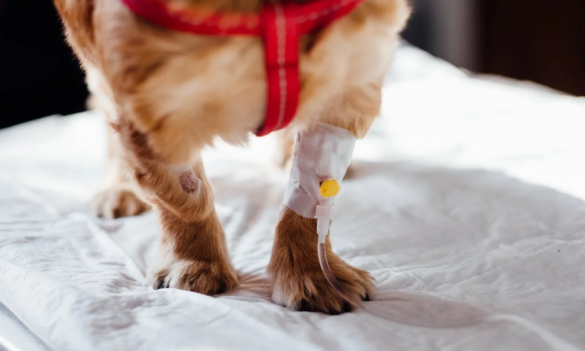

In-home vet care provides a convenient way for pets to receive quality veterinary services within the comfort of their own home. Mobile vets can treat many of the same common health issues that would typically require a trip to the clinic.
Here are some of the most frequently treated medical conditions and services provided by in-home veterinary practices:
Routine Preventative Care
Vaccinations
Mobile vets carry all core and lifestyle vaccine antigens to customize protection based on your pet's risk profile and geographical region. Rabies, DHPP, FVRCP, FeLV, Lyme, Leptospirosis, and other critical shots are administered per your pet's age and vaccine schedule. In-home delivery ensures they stay current on protection against contagious illnesses.
Wellness Examinations
Your vet will perform annual or bi-annual wellness physical exams, evaluating your pet from nose to tail, including eyes, skin, coat, weight, heart, lungs, abdomen, joints, dental health, and neurological function. Any concerns found prompt recommendations for additional diagnostics like bloodwork, urinalysis, or fecal tests to screen for internal issues early when treatment is most effective.
Professional Dental Cleanings and Oral Health Assessments
Allow your vet access to perform non-anesthetic dental cleanings using specialized ultrasonic scalers to remove built-up calculus and tartar above and below the gum line. Polishing follows to smooth surfaces. They'll examine teeth, gums, and oral cavities for signs of infection requiring antibiotic therapy or resorption and fractures indicating extractions.
Parasite Prevention and Fecal Testing
Have fresh stool samples ready for microscopic fecal exams, checking for intestinal worms or protozoan parasites, which could lead to malnutrition, anemia, or gastroenteritis if left untreated. Your vet will provide oral and topical parasite preventatives like heartworm, flea, and tick medication tailored to your geographic risks.
Microchipping
Microchip implantation takes just seconds to provide permanent identification and 24/7 lifetime lost pet tracing services. Your vet keeps microchip scanners on hand to confirm existing registration and scan for microchips in new pets.
Prescription Refill Needs
Don't let ongoing prescription medications lapse - alert your in-home vet to any refill needs during the appointment so they can conduct an exam and renew your pet's medications just as at a regular veterinary clinic.
Common Illnesses and Infections
In addition to preventative care, mobile veterinarians can diagnose and develop treatment plans for many common illnesses right in your home. Catching infections early improves outcomes and minimizes suffering and complications.
Dermatologic Conditions
In-home vets carry microscopes to perform skin scrapings, tape preps, and examinations for the presence of mites, yeast, or bacteria causing parasitism, infection, and inflammation. They can provide antibiotics, antifungals, medicated shampoos, allergy management, and other relief for issues like mange, ringworm, pyoderma hot spots, allergic reactions, and autoimmune skin disorders.
Ear Infections
Examining ears with otoscopes allows evaluation of the ear canal and eardrum for signs of infection like discharge, odor, redness, swelling, head tilting, or scratching. Oral or topical medications treat bacterial and fungal infections to restore ear comfort and function.
Ocular Diseases
Eye tests assess pupil response, intraocular pressure, corneal ulcers, discharge, eyelid/conjunctival abnormalities, and other signs of issues like glaucoma, dry eye, cataracts, progressive retinal atrophy, and infectious conditions that warrant ophthalmologic referral.
Urinary Tract Infections
Collecting and analyzing urine samples during the visit identifies bacteria causing uncomfortable UTIs so appropriate antibiotics can be prescribed along with recommendations to enhance urinary health long-term through dietary changes.
Gastrointestinal Upsets
Vets assess symptoms like vomiting, diarrhea, constipation, weight loss, poor appetite, bloating, and nausea that could stem from parasites, food reactions, foreign body obstructions, toxicity, metabolic conditions, stress, infections, inflammations, and other GI disturbances - guiding proper treatment and management.
Allergies
Diagnosing allergy triggers like fleas, environment, or food allows tailored therapy with anti-itch medications, hypoallergenic dietary transitions, and avoidance guidance to relieve associated uncomfortable itching, skin irritation, and ear and paw infections.
Prompt at-home diagnosis and treatment provide timely relief when pets are under the weather and prevent minor issues from becoming emergencies.
Chronic Disease Management
Diabetes
Help diabetic pets maintain stable blood sugar through insulin therapy, glucose curve testing, diet regulation, and at-home monitoring.
Kidney Disease
Detect kidney issues early through bloodwork. Guide diet and hydration along with medications to support renal function.
Heart Disease
Manage heart disease with medications and lifestyle changes. In-home ultrasound helps assess an enlarged heart or fluid in the lungs.
Arthritis
Provide joint injections, anti-inflammatory medications, laser therapy, and other modalities to support mobility and reduce pain.
Anxiety
Alleviate anxiety and fearfulness with pheromone therapy, medications if needed, and behavioral modification plans.
Geriatric and End-of-Life Care
Pain Management
Manage ongoing arthritis, bone cancer, and other pain through tailored analgesic regimens to keep pets comfortable.
In-Home Euthanasia
Peacefully end a terminally ill pet's life at home through sedation followed by intravenous euthanasia solution injection.
Hospice Services
Partner for in-home visits to keep geriatric or terminally ill pets comfortable, clean, fed, and properly medicated.
Palliative Services
Control pain, nausea, and other end-of-life symptoms when curative treatments are no longer an option to optimize the remaining quality of life.
Mobility Assistance
Help large, aging pets safely mobilize within the home with harnesses, ramps, and other mobility aids.
The ability to obtain quality medical care from trusted vets without the stress of travel accommodates pets' needs through all life stages. In-home vet practices focus on convenient diagnosis and treatment to keep your furry companions happy and healthy.
In-Home Vet Services by Vets ASAP
Vets ASAP is a mobile vet practice that brings quality veterinary care to your doorstep. Our experienced and compassionate vets can treat many of the same common health problems that your pet may face, such as:
- Routine Preventative Care
- Common Illnesses and Infections
- Chronic Disease Management
If you are interested in Vets ASAP, please visit our website. We look forward to meeting you and your pet soon!